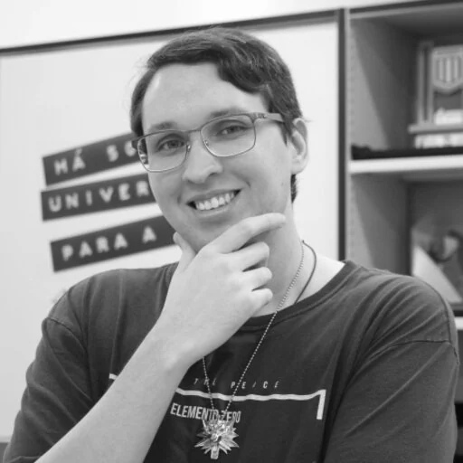

Formação Acadêmica

Ewerton Cercal teve notória presença na área de tecnologia e história:
- Mestre em Patrimônio Cultural e Sociedade pela Universidade da Região de Joinville (Univille).
- Licenciado em História pela mesma instituição (Univille).
- Graduado em Análise e Desenvolvimento de Sistemas pelo Centro de Ciências Tecnológicas da Universidade do Estado de Santa Catarina (UDESC Joinville).
Pesquisas e Atuação Interdisciplinar
Atuação Interdisciplinar
O professor Ewerton Cercal é um pesquisador ativo, sua pesquisa de mestrado investigou a destinação dos resíduos eletrônicos em Joinville/SC e seus impactos no patrimônio ambiental, dialogando com campos como História Ambiental, políticas públicas, sustentabilidade, gestão de resíduos sólidos, Direito e Sociologia. Esse percurso consolidou uma atuação interdisciplinar voltada à compreensão crítica dos efeitos sociais, ambientais e patrimoniais do desenvolvimento tecnológico.
Resíduos eletrônicos e políticas públicas em Joinville/SC
No contexto municipal investigado pela pesquisa, a gestão de resíduos eletroeletrônicos (REEE) envolve a articulação entre poder público, órgãos ambientais e entidades de logística reversa:
- Pontos de Entrega Voluntária (PEVs): Joinville mantém pontos permanentes e gratuitos para o descarte de eletrônicos, pilhas e baterias usadas, funcionando de segunda a sexta-feira em unidades regionais de obras (como nos bairros Vila Nova, Paranaguamirim e Aventureiro) e no Centro de Atendimento ao Cidadão (Santo Antônio).
- Campanhas de coleta e logística reversa: A Secretaria de Meio Ambiente (Sama) promove ações periódicas de coleta gratuita — como no Dia Mundial da Reciclagem e no Dia Mundial do Lixo Eletrônico — em parceria com a Secretaria de Infraestrutura Urbana, o Instituto do Meio Ambiente de Santa Catarina (IMA) e a gestora de logística reversa Weee.do.
- Risco ao patrimônio ambiental: A principal justificativa técnica da gestão municipal para essas ações é impedir que elementos tóxicos presentes nos equipamentos contaminem o solo e os recursos hídricos locais.
Humanidades Digitais e da gestão do patrimônio cultural
A atuação de Éwerton Cercal nas Humanidades Digitais e na gestão do patrimônio cultural se destaca por
unir duas pontas que costumam caminhar separadas: o domínio técnico da computação (desenvolvimento web,
digitalização e mídias interativas) e a formação crítica das ciências humanas (História, memória e
estudos do patrimônio).
Em vez de tratar a tecnologia apenas como ferramenta operacional, sua trajetória mostra uma preocupação com a mediação cultural e com os impactos materiais do mundo digital.
- Preservação e Difusão de Acervos: Com passagem pelo MUVIUNI, Centro Memorial e Laboratório de História Oral da Univille, atuou na digitalização de documentos, criação de websites e gestão de redes sociais para ampliar o acesso público à memória histórica.
- Mediação Cultural e Interatividade: Utiliza o desenvolvimento web e narrativas interativas — experiência que inclui desde jogos educativos de História até museus virtuais — para tornar o patrimônio cultural mais acessível e engajador.
- Olhar Crítico sobre o Digital: Conecta o uso de tecnologias de memória aos seus impactos materiais, articulando a discussão sobre mídias em museus (como na tradução de A materialidade da tecnologia virtual) à investigação sobre o descarte de eletrônicos e o patrimônio ambiental.